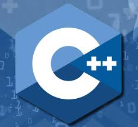
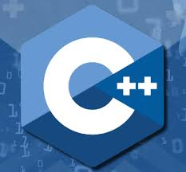

Son herramientas que permiten a los humanos comunicarse con las computadoras, con conjuntos de instrucciones que le dicen a la computadora qué hacer, ya que cada lenguaje tiene su propia sintaxis y reglas, pero todos comparten el objetivo común de permitirnos crear software, aplicaciones y sitios web.
Existen diferentes tipos de lenguajes de programación de la cual son los siguientes: Lenguajes de bajo nivel (ensamblador, código máquina); Lenguajes de alto nivel (Python, Java, C++, JavaScript, etc.); Lenguajes compilados vs. interpretados; Lenguajes orientados a objetos, funcionales, imperativos, etc.
Los lenguajes definen diferentes categorías de datos que se pueden manipular; los tipos comunes incluyen enteros, números de punto flotante (decimales), caracteres, cadenas de texto y booleanos (verdadero/falso); algunos lenguajes tienen un tipado estático (los tipos se declaran explícitamente), mientras que otros tienen un tipado dinámico (los tipos se infieren en tiempo de ejecución); algunos simbolos operacionales son:Aritméticos: (+, -, *, /, %, etc.) para realizar cálculos matemáticos; de comparación: (==, !=, >, <, >=, <=) para comparar valores;
lógicos: (AND, OR, NOT) para combinar o negar condiciones booleanas, etc.